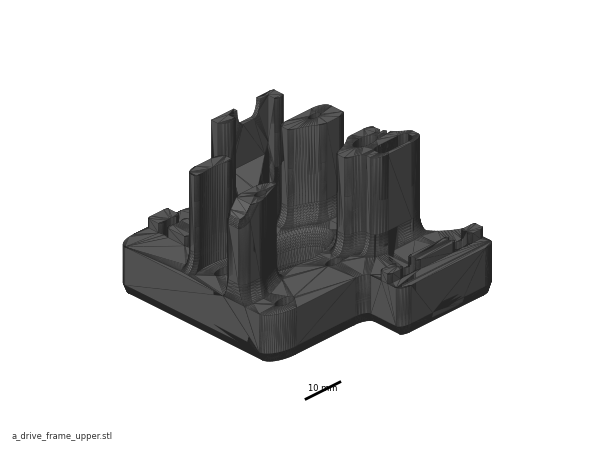
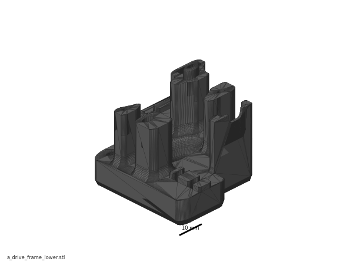
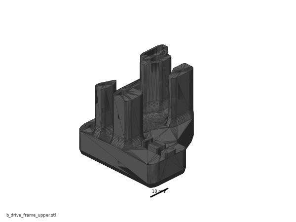
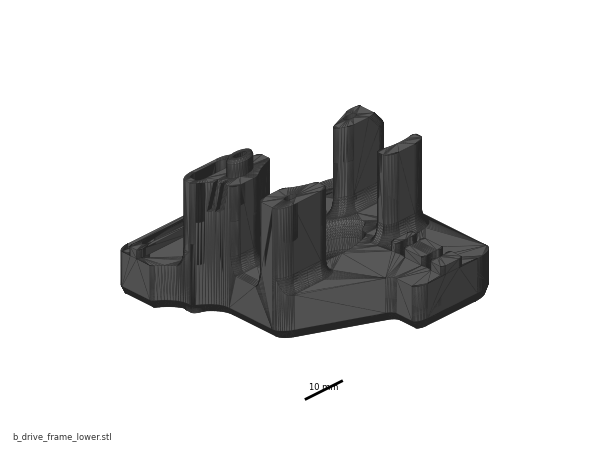
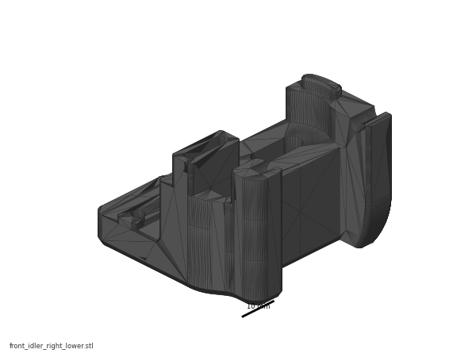
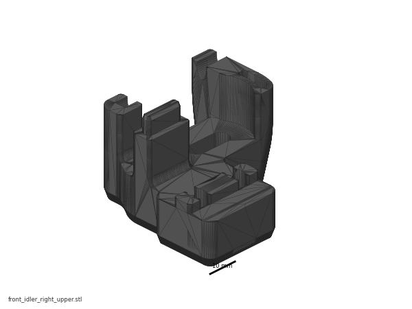
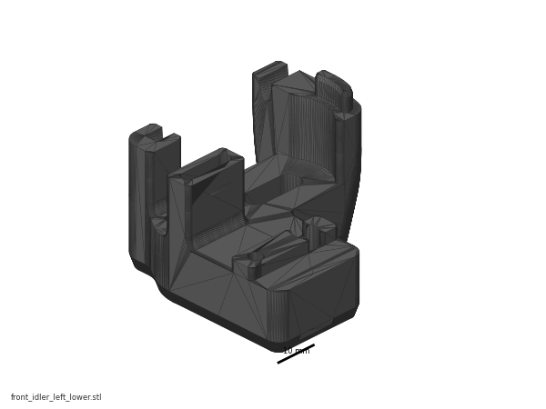
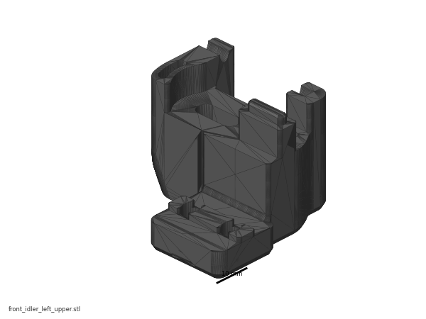

Before you start Chapter 04¶
Before you start · Chapter 04 — A/B drive units and front idlers
Builds the four CoreXY sub-assemblies that carry the A and B belts — two motor-carrying drive units and two front idlers with their tension arms. Unlocks Ch 05 (gantry), which bolts all four onto the Y extrusions.
What you're building in this chapter: the four corners the printer's two long belts run around. In CoreXY, two motors sit fixed at the back of the machine and pull two crossed belts; drive both the same way and the toolhead moves in X, drive them opposite ways and it moves in Y — nothing heavy has to move with the toolhead, which is why the machine can be fast (glossary). A is the rear-right corner and B the rear-left. Each is a drive unit: a printed frame in two halves, holding stacks of small flanged bearings on two standing bolts, with a stepper motor bolted underneath and a toothed pulley on its shaft. At the front, each belt turns around a front idler — the same printed sandwich of bearings, with no motor, plus an orange tension arm that carries the bearing stack on its own axle bolt and that a small screw draws forward to take up belt slack in Ch 07. The two belts run at two different heights so they never touch, and almost everything in this chapter exists to set those two heights exactly: the pulley height on each motor, the bearing-stack heights on each post, and the deliberately different heights of the two idler frames. All four assemblies are built on the bench and bagged; none of them touches the printer until Ch 05.
Time: 3.5–5.0 h hands-on, first build (survey §5.1 P04).
Sessions: 6 × ~30 min — the Pause: lines below break the chapter into 6 segments; every minute figure is a first-build estimate.
Prerequisites:
- Ch 01 — Frame. Nothing from Ch 02 or Ch 03 is needed; this is bench work and can run in parallel with them (survey §5.1: P04 ← P01).
- Print batch B03 — A/B drive units + front idlers, 2 plates, 8.5 h, 119 g black (print plan). B03's plate captions were corrected 2026-09-05 to pair
front_idler_right_*with the A drive andfront_idler_left_*with B — see Step 04.2. Both plates print all eight frames either way. - Print batch B02 — the orange day, plate B02-P2, for
[a]_tensioner_leftand[a]_tensioner_right. - Print batch B00 — for
pulley_jig.stl. Without it you are setting two different pulley heights with calipers.
Tools
- Hex drivers 2 mm, 2.5 mm, 3 mm, 4 mm — a 2.5 mm ball-end helps at the M3×40
- 1.5 mm hex — the pulley set screws (verify on bench against the kit's pulleys)
- Temperature-controlled soldering iron + LDO brass M3 insert tip (4 heat-set inserts, Steps 04.3–04.4)
- Printed
pulley_jig.stl(Voron-2STLs/Tools/) - Digital caliper — pulley height fallback, and to confirm both drives match
- A 60 mm offcut of 6 mm 2GT belt, or a thin steel rule — the belt-path straightness check
- Tweezers or a small screwdriver to place spacers into the stacks without dropping them
- Masking tape + marker — label every assembly A or B as it is finished
Consumables: Loctite 243 (blue), for the pulley set screws if they are not already pre-applied.
Printed parts
Parts arrive in the bins named below (see the bin map in print/README.md#bins); check the bin label's list before you start.
| Looks like | STL | Bin | Qty | Colour |
|---|---|---|---|---|
 |
a_drive_frame_upper.stl |
04-A | 1 | Black |
 |
a_drive_frame_lower.stl |
04-A | 1 | Black |
 |
b_drive_frame_upper.stl |
04-B | 1 | Black |
 |
b_drive_frame_lower.stl |
04-B | 1 | Black |
 |
front_idler_right_lower.stl |
04-A | 1 | Black |
 |
front_idler_right_upper.stl |
04-A | 1 | Black |
 |
front_idler_left_lower.stl |
04-B | 1 | Black |
 |
front_idler_left_upper.stl |
04-B | 1 | Black |
 |
[a]_tensioner_right.stl |
04-A | 1 | Orange |
 |
[a]_tensioner_left.stl |
04-B | 1 | Orange |
{kind=link}
{kind=link}
{kind=link}
{kind=link}
{kind=link}
{kind=link}
{kind=link}
{kind=link}
All ten are in Voron-2 STLs/Gantry/AB_Drive_Units/ and STLs/Gantry/Front_Idlers/. Two more parts sit in those same folders and are not used here: [a]_cable_cover (Ch 07) and [a]_z_chain_retainer_bracket_x2 (Ch 06). Keep them bagged.
Hardware (chapter totals)
| Fastener / part | Qty | Where |
|---|---|---|
Stepper motor, 0.9°, LDO-42STH48-2004MAH(VRN) |
2 | one per drive (p.75, p.79) |
GT2 pulley, 20 T, 5 mm bore, 6 mm wide (Pulley, 2GT, 20T, 5mm ID 6mm W) |
2 | one per motor shaft (p.75, p.79). The kit has exactly two; the four 9 mm 20T pulleys are the Z-drive pulleys used in Ch 02 |
| F695 flanged bearing (5×13×4 mm) | 16 | 6 per drive (p.74, p.78) + 2 per front idler (p.65, p.69). The A/B side uses F695 only — 625-2RS is the Z-drive bearing (Ch 02) |
| M5 precision spacer, brass — the manual's "M5 shim" | 16 | one above and one below every bearing pair |
| M5×30 BHCS | 4 | 2 per drive, upper frame → lower frame (p.73, p.77) |
| M5×40 SHCS | 2 | 1 per front idler — the idler axle: first the stack-building aid, then refitted from the top through the tension arm into its M5 nut and clamped firm (p.65–66, p.69–70) |
| M3×30 SHCS | 6 | 3 per motor (p.76, p.80) |
| M3×40 SHCS | 2 | 1 per front idler — the belt tensioner screw, through the frame's front wall into the arm's heat-set insert (p.67, p.71); set with the belt on in Ch 07 Step 07.5 |
| M3 washer | 2 | under each M3×40 head (p.67, p.71) |
| Heat-set insert, brass, M3×5×4 | 4 | 2 in a_drive_frame_upper, 1 in each tension arm (p.64) |
| M5 hex nut | 2 | 1 in each tension arm foot (p.64) |
Read first
- A and B parts are mirrored and swap silently. The A drive's printed frames carry a cutout the B frames do not have (p.73, circled). Only
a_drive_frame_upperhas the two heat-set insert bosses —b_drive_frame_upperhas none. Build one complete assembly at a time; never have both sets of frames loose on the bench together. - Where each assembly ends up, standing in front of the printer: A = rear right, B = rear left. The official manual shows it (p.63, p.83 — A on the right, B on the left, seen from the front) but never writes it; the LDO wiring guide does, and the LDO Klipper config repeats it (
## B Stepper - Left,## A Stepper - Right). It follows that the A idler is the front right pair and the B idler the front left pair. src - The bearing stacks are the mistake everyone makes. Every F695 pair goes flange-out — the two plain faces touch, the two flanges face away from each other — with one spacer above the pair and one below. The drive's far post takes two such pairs (4 bearings, 4 spacers); the near post and each front idler take one (2 bearings, 2 spacers).
- The A and B pulleys sit at different heights and face opposite ways: A is hub-down at 16.5 mm (p.75), B is hub-up at 6.5 mm (p.79). That difference is what stacks the two belt planes. No amount of belt tension in Ch 07 will fix it if you set them the same.
- LDO's Build Notes have no entry for p.62–81. The only kit deviation in this whole chapter is the standing substitution from their p.19 note: brass M5 precision spacer everywhere the manual writes "M5 shim". src
Sources for this chapter:
- Voron 2.4r2 assembly manual (pinned
de7e89d) pages 62–81 — idler stacks, tension arms, drive frames, bearing stack-ups, pulley heights, motor orientation - LDO wiring guide (Rev D) — A = rear right, B = rear left; the manual draws it (p.63, p.83) but never writes it
- LDO Klipper config
leviathan-printer-rev-d-sbv2.cfg—## A Stepper - Right/## B Stepper - Left, andfull_steps_per_rotation: 400for the 0.9° A/B motors - LDO Build Notes (Rev D) — no entry exists for p.62–81; the only deviation is the standing brass M5 precision spacer substitution from their p.19 note
- LDO 350 Rev D BOM — the two 6 mm 20T pulleys vs the four 9 mm Z pulleys, and the 0.9° motor part number
- LDO heat-set insert tool guide — the four-insert pass
- Voron-2
STLs/Gantry/AB_Drive_Units, Voron-2STLs/Gantry/Front_Idlers, Voron-2STLs/Tools - survey §4.4 · print plan batches B00/B02/B03
Video coverage (Steve Builds, pre-release LDO kit — differs from Rev D+): Part 3 @0:58:20 (+3m), Part 3 @1:04:20 (+14m), Part 3 @1:07:20 (+10m), Part 3 @1:18:03 (+2m), Part 3 @1:23:20 (+9m), Part 5 @1:12:20 (+8m)